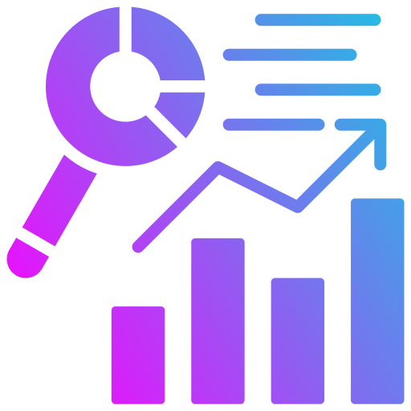
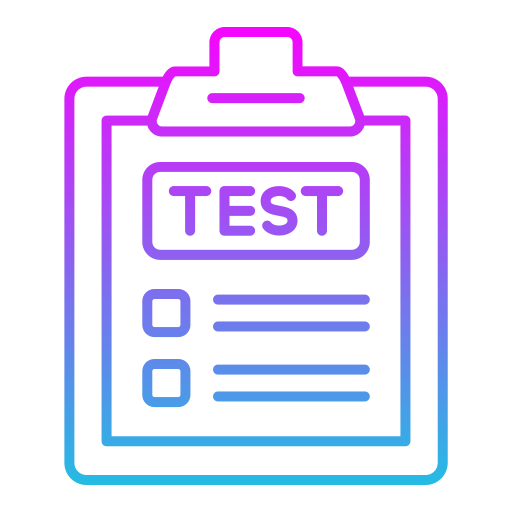
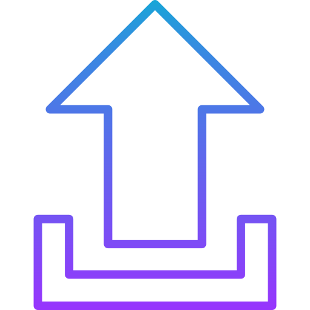
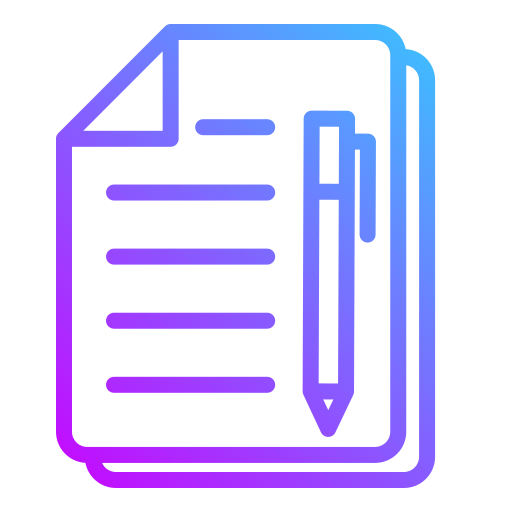
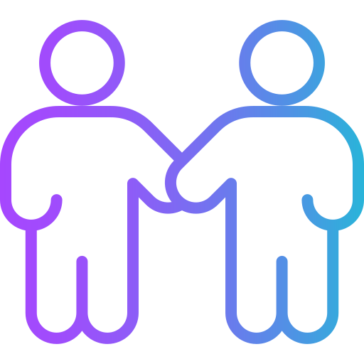
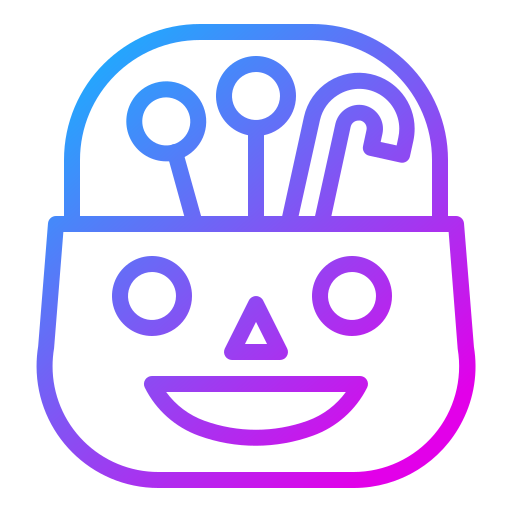

Business Analysis & RequirementsStrong at defining clear, actionable requirements for complex systems. Comfortable working with integrations, APIs and edge cases and translating business needs into specifications that developers can actually build from. Known for producing requirements that reduce rework and speed up delivery.
 Development
Development
Hands-on development experience across VB6, C#, Web and backend systems. Builds production-ready features with a strong focus on correct requirements implementation and maintainability. Uses AI to accelerate development without compromising design quality.

Testing & Quality MindsetThorough and methodical tester with a strong focus on real-world behaviour and edge cases. Works closely with internal testers to ensure solutions meet business intent and behave correctly in production.

DeploymentDeploying and configuring systems so environments, data and integrations are set up correctly from day one.

Writing & DocumentationClear, concise writer who produces easy-to-understand documentation, release notes and help text. Able to adapt to different formats quickly when given a good example. Writing is used as a tool to reduce confusion, support adoption and improve outcomes.
Communication
Clear, practical communicator who explains technical concepts in plain language. Comfortable answering questions using examples, visuals and step-by-step explanations to ensure shared understanding across technical and non-technical audiences.

CollaborationWorks well with developers, testers, stakeholders and clients. Known as approachable, reliable and easy to work with, while still maintaining high standards and clear expectations.

AI-Enabled WorkUses AI to speed up writing, review test plans and provide fast access to answers, improving efficiency and throughput across analysis, development and testing.
Process Improvement & Automation
Identifies inefficient or manual processes and improves them through better system design, automation and practical tooling.